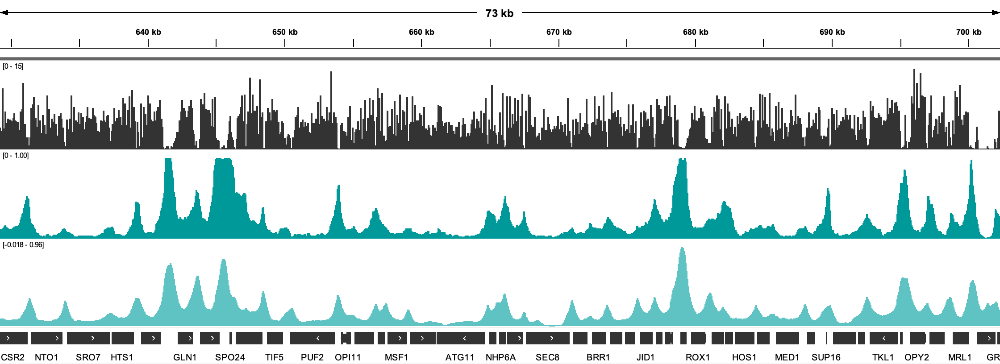
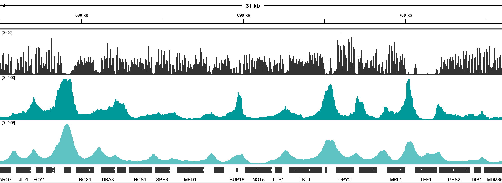

Train neural networks with momics and tensorflow¶
momics provides several useful resources to train neural networks with tensorflow. This notebook demonstrates how to train a simple neural network with momics and tensorflow.
Connect to the data repository¶
We will tap into the repository generated in the previous tutorial.
[ ]:
from momics import momics as mmm
## Creating repository
repo = mmm.Momics("yeast_CNN_data.momics")
## Check that sequence and some tracks are registered
repo.seq()
repo.tracks()
Modify some tracks¶
We can first pre-process the tracks to normalize them, and save them back to the local repository.
[ ]:
import numpy as np
for track in ["atac", "mnase"]:
cov = repo.tracks(track)
# Compute genome-wide 99th percentile
q99 = np.nanpercentile(np.concatenate(list(cov.values())), 99)
for chrom in cov.keys():
arr = cov[chrom]
# Truncate to genome-wide 99th percentile
arr = np.minimum(arr, q99)
# Rescale to [0, 1]
arr = (arr - np.nanmin(arr)) / (np.nanmax(arr) - np.nanmin(arr))
# Convert NaNs to 0
arr = np.nan_to_num(arr, nan=0)
# Store back
cov[chrom] = arr
repo.ingest_track(cov, track + "_rescaled")
repo.tracks()
Define datasets and model¶
We will define a simple convolutional neural network with tensorflow to predict the target variable ATAC from the feature variable MNase. This requires to first define a set of genomic coordinates to extract genomic data from. We will use MNase_rescaled coverage scores over tiling genomic windows (features_size of 1025, with a stride of 48) as feature variables to predict ATAC_rescaled coverage scores over the same tiling genomic windows, but narrowed down to the
a target_size of 24 bp around the center of the window. We can split the data into training, testing and validation sets, using momics.utils.split_ranges().
[ ]:
import momics.utils as mutils
# Fetch data from the momics repository
features_size = 8192 + 1
stride = 256
bins = repo.bins(width=features_size, stride=stride, cut_last_bin_out=True)
bins = bins.subset(lambda x: x.Chromosome != "XVI")
bins_split, bins_test = mutils.split_ranges(bins, 0.8)
bins_train, bins_val = mutils.split_ranges(bins_split, 0.8)
bins_train
We now need to define different datasets, for training, testing and validation. We will use momics.dataset.MomicsDataset() constructor, indicating the batch size we wish to use in the training process.
[ ]:
from momics import dataset as mmd
features = "mnase_rescaled"
target = "atac_rescaled"
target_size = 512
batch_size = 500
train_dataset = (
mmd.MomicsDataset(repo, bins_train, features, target, target_size=target_size, batch_size=batch_size)
.shuffle(10)
.prefetch(2)
.repeat()
)
val_dataset = mmd.MomicsDataset(repo, bins_val, features, target, target_size=target_size, batch_size=batch_size)
test_dataset = mmd.MomicsDataset(repo, bins_test, features, target, target_size=target_size, batch_size=batch_size)
train_dataset
Now is time to define the model architecture. In this example, we will use a simple customizable convolutional neural network (ChromNN), provided in momics.nn. We can instantiate the model with the number and shape of layers we want, and compile it with the desired optimizer, loss function and metrics.
[ ]:
from momics import nn
import tensorflow as tf # type: ignore
from tensorflow.keras import layers # type: ignore
## Define the model with three convolutional layers
model = nn.ChromNN(
inputs={"mnase_rescaled": layers.Input(shape=(features_size, 1), name="mnase_rescaled")},
outputs={"atac_rescaled": layers.Dense(target_size, activation="linear", name="atac_rescaled")},
filters=[64, 16, 8],
kernel_sizes=[3, 8, 80],
).model
## Use a combination of MAE and correlation as loss function
def loss_fn(y_true, y_pred):
return nn.mae_cor(y_true, y_pred, alpha=0.9)
## Use Adam optimizer, a learning rate of 0.001, and return MAE as metric
model.compile(
optimizer=tf.keras.optimizers.Adam(learning_rate=0.001),
loss=loss_fn,
metrics={"atac_rescaled": "mae"},
)
model.summary()
Fit the model¶
Now that we have the datasets and the model, we can fit the model to the training data, using the fit() method of the model. We can also evaluate the model on the testing and validation datasets. Here, we’ll quickly iterate over 10 epochs, but you can increase this number to improve the model performance.
[ ]:
import os
import numpy as np
from pathlib import Path
from tensorflow.keras.callbacks import CSVLogger, EarlyStopping, ModelCheckpoint, ReduceLROnPlateau # type: ignore
os.makedirs(".chromnn", exist_ok=True)
callbacks_list = [
CSVLogger(Path(".chromnn", "epoch_data.csv")),
ModelCheckpoint(filepath=Path(".chromnn", "Checkpoint.keras"), monitor="val_loss", save_best_only=True),
EarlyStopping(monitor="val_loss", patience=40, min_delta=1e-5, restore_best_weights=True),
ReduceLROnPlateau(monitor="val_loss", factor=0.1, patience=6 // 2, min_lr=0.1 * 0.001),
]
model.fit(
train_dataset,
validation_data=val_dataset,
epochs=10,
steps_per_epoch=int(np.floor(len(bins_train) // batch_size)),
callbacks=callbacks_list,
)
Evaluate and save model¶
Now let’s see how the trained model performs, and save it to the local repository.
[ ]:
# Evaluate the model with our test dataset
model.evaluate(test_dataset)
Use the model to predict ATAC-seq coverage¶
[ ]:
from momics import aggregate as mma
## Predict the ATAC signal from the MNase signal
bb = repo.bins(width=features_size, stride=8, cut_last_bin_out=True)["XVI"]
ds = mmd.MomicsDataset(repo, bb, "mnase_rescaled", batch_size=1000).prefetch(10)
predictions = model.predict(ds)
## Export predictions as a bigwig
centered_bb = bb.copy()
centered_bb.Start = centered_bb.Start + features_size // 2 - target_size // 2
centered_bb.End = centered_bb.Start + target_size
chrom_sizes = repo.chroms(as_dict=True)
keys = [f"{chrom}:{start}-{end}" for chrom, start, end in zip(centered_bb.Chromosome, centered_bb.Start, centered_bb.End)]
res = {f"atac-from-mnase_f{features_size}_s{stride}_t{target_size}": {k: None for k in keys}}
for i, key in enumerate(keys):
res[f"atac-from-mnase_f{features_size}_s{stride}_t{target_size}"][key] = predictions[i]
mma.aggregate(res, centered_bb, chrom_sizes, type="mean", prefix="prediction")
This generates a new bw file with ATAC-seq coverage over chr16, predicted from MNase-seq coverage.
Here is a screenshot of ATAC-seq coverage track over chr16, from experimental data (darker cyan) or predicted from MNase-seq coverage (MNase: grey track; predicted ATAC: lighter cyan), taken from IGV:

A closer look:
